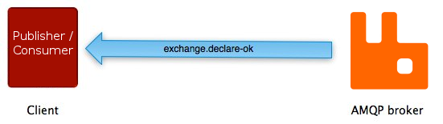
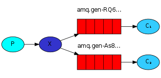

Novo Stack Commerce Livelo
Ricardo Deitoz Posser
Criando um pedido

O que fazer em caso de falha na criação do pedido?
E se ocorrer erro na chamada no envio de e-mail?
E em caso de indisponibilidade do banco de dados?
RabbitMQ
Um sistema de mensageria open source que implementa o padrão AMQP.
Espécie de middleware que recebe mensagens de seu(s) criador(es) (publisher) e as roteiam até seu(s) consumidor(es) (consumer)
Mensageria
É uma forma de trocar mensagens de um ponto A para um ponto B ou diversos pontos C.
Possibilita comunicação distribuída fracamente acoplada.
O publisher envia uma mensagem a um destino, e o consumer obtém a mensagem no destino.
O publisher e o consumer não precisam estar disponíveis no mesmo momento para se comunicar.
Um exemplo de mensageria é o e-mail.
O componente que recebe a mensagem do publisher e no qual o consumer pega a mensagem é o message broker ou middleware de mensageria
Alguns usos da mensageria:
- Enviar dados para diversas aplicações sem chamar suas APIs diretamente na aplicação;
- Fazer as coisas em uma certa ordem, como em um sistema transacional;
- Monitorar feeds de dados (ex.:quantidade de pedidos efetuados).
AMQP 0-9-1 (Advanced Message Queuing Protocol)

Brokers entregam as mensagens para os consumers inscritos na fila.
/
O consumer faz o pull de mensagens das filas sob demanda.
Métodos




Entidades
Filas (queues), exchanges e bindings são chamadas "entidades AMQP".
A aplicação define as entidades que ela precisa e os esquemas de rotas necessários.
Mensagem
As mensagens tem, entre outros, os atributos:
- Content type
- Content encoding
- Routing key
- Delivery mode (persistente ou não)
- Message priority
- Message publishing timestamp
- Expiration period
- Publisher application id
As mensagens também tem um payload, que representa os dados que ela carrega.
O broker trata esse payload como um byte array e nunca inspeciona ou modifica o conteúdo.
Tipicamente, os atributos Content type e encoding são usados para tratar da serialização e deserialização desse payload.
Filas
Armazenam mensagens que serão consumidas por aplicações. Têm, entre outras, as propriedades:
- Name
- Durable
- Exclusive (usada por uma conexão e será deletada quando a conexão for fechada)
- Auto-delete (é deletada quando o último consumidor cancela a subscrição)
- Arguments (opcional, usado por plugins ou features específicas do broker, p.ex.: queue lenght limit, time to live)
Uma fila precisa ser declarada numa aplicação.
Declarar uma fila vai fazer com que ela seja criada se ela não existe.
A declaração não vai ter efeito se a fila já existe e os atributos são os mesmos, mas quando os atributos são diferentes, uma exceção é lançada.
As aplicações podem escolher o nome da fila ou deixar para o broker gerar um passando uma string vazia no nome da queue.
Nomes começados com "amq." são reservados para uso interno do broker.
A durabilidade da fila não faz as mensagens duráveis. Apenas mensagens "persistent" são recuperadas em caso de restart.
Bindings
Regras que os exchanges usam para rotear as mensagens para as filas.
Se uma mensagem não pode ser roteada para nenhuma fila (por exemplo: não existem bindings que ligam a mensagem à fila) ela é perdida ou retorna para o publisher, dependendo dos seus atributos.
Utilizando extensões, também é possível que a mensagem seja direcionada para a fila de "dead letter"
Exchanges
Responsável por rotear a mensagem em zero ou mais filas. O algoritmo de toreamento depende do tipo e bindings. Os brokers do AMQP 0-9-1 tem 4 tipos:
- Direct
- Fanout
- Topic
- Headers
Exchanges também têm diversos atributos, entre eles:
- Name
- Durability (sobrevive ao restart do broker)
- Auto-delete (é deletado quando a última fila é desvinculada)
- Arguments (opcional, usado por plugins e features específicas do broker)
Exchanges transientes devem ser redeclarados quando o broker volta a fica online
Default
É um direct exchange sem nome pré-declarado pelo broker.
Tem uma propriedade especial útil para aplicações simples: toda fila que é criada é automaticamente vinculada ao default com uma rota que é o nome da fila.

Fanout
O fanout exchange roteia as mensagens para todas filas que estão vinculadas a ele.

Direct
Entrega as mensagens para as filas baseado nas routing keys das mensagens.
Topic
Semelhante ao direct, porém nesse caso as routing keys são padrões.

* substitui exatamente uma palavra.
# substitui zero ou mais palavras.
Headers
Entrega as mensagens para as filas baseado nos headers das mensagens. Ignora a routing key.
É possível vincular uma fila usando mais de um header. Nesse caso, é necessário o argumento "x-match" com o valor "any" (OR) ou "all" (AND)
Quando o broker remove mensagens das filas?
A especificação do AMQP 0-9-1 propõe duas escolhas:
- Depois que o broker manda a mensagem para uma aplicação (automatic acknowledgement model);
- Depois que a aplicação manda um ack (explicit acknowledgement model).
Explicit Acknowledgement Model
- método basic.ack: Ok (permite bulk)
- método basic.reject: Problema, descarte ou coloque novamente na fila
- método basic.nack: Problema, descarte ou coloque novamente na fila (implementado como extensão no RabbitMQ, permite fazer reject em bulk)
Prefetching
Útil para caso em que múltiplos consumidores dividem uma fila para especificar quantas mensagens vão ser enviadas para cada consumidor, aumentando o throughput de mensagens que tendem a ser publicadas em batch ou usada como balancer.